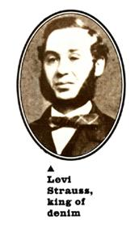
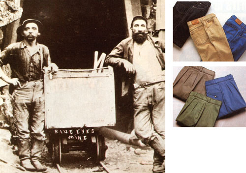
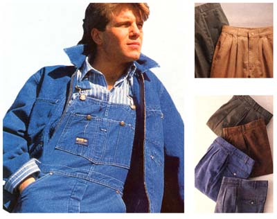

CLOTHES THAT WORK
American History 501
Samoans have lavalavas. Greeks have pom-poms on their shoes. Japanese have kimonos. Austrians have those Chico Marx hats but with deer fir pins. Out of our melting pot and our push west came the clothes that are a part of the American image.
If you could take the hand of an angel and fly back to your own best day, it is doubtful that you would be wearing a three-piece suit. No, I don't mean your wedding day, but the day you felt yourself most comfortable and full of purpose. Chances are, you would have been wearing a pair of jeans. Blue jeans, Levi's, dungarees, denims: cotton work trousers of heavy blue drill that gain comfort and character with age.
Downstairs, I have a drawerful of old jeans that I can't bear to throw out. Jeans live with you so intimately that they take on a life of their own. Haven't you ever reached for a pair of gabardines with the intention of attending a meeting, when a pair of jeans, hanging in the closet with a ranger belt already looped through, stopped you: Whoa,pilgrim.Look out that window. That's some day, right? Hang those clerking pants back up and let's get out of here.
In 1853, a Bavarian immigrant named Levi Strauss, an astute merchant in San Francisco, responded to the gold-rush need for tough miner's clothes. He had his stock of brown cotton tent canvas run up as plain trousers, no belt loops and no back pockets. A cinch belt in the back kept them up. Scrabbling among too many rocks and too little gold, crawling along shafts, wrestling timber supports and balky dray mules, Strauss's "overalls" lasted. They were cheap and they felt good.
Strauss switched to denim ( from serge de Nimes , a twill made in southern France) and had it dyed in reliable, uniform indigo. By the I860s, Levi Strauss's blue pants were daily wear for miners and farmers and cattlemen throughout the West. In 1873 he bought, for $69 - the price of the patent application - an idea from a Russian immigrant tailor in Reno for making miner's pants stronger by riveting the critical seams. They were nicknamed jeans after the city of Genoa, where sailors wore blue cotton canvas.
By 1880 the Levi was full-blown, with orange stitching (including the trademark "arcuate" design across the back pockets, once the functional anchor for pocket lining), bar tacking, rivets, watch pocket and the "Two Horse" leather patch. Lot numbers are assigned to products and, for the OI-weight denim used, the "waist-high overalls" are called 501s. It's true; more so than most of the thin ghosts we call up for our heritage, Levi's are rooted in the real stuff.
Henry David Lee was another kind of merchant. He started out in Ohio selling kerosene and moved west to Salina, Kansas, with a small bundle of venture capital. The H.D. Lee Mercantile Company sold fancy canned goods and offered a line of Eastern work clothes. When shortages and shipping didn't suit Henry David, he set up his own garment works, producing overalls, jackets and dungarees. Dungarees refer specifically to cotton drill pants without bib fronts, and generally to the rough blue cotton cloth named for the dyer's section of Bombay- Dungri -where it originated. Lee's chauffeur probably came up with the Lee Union-All, a denim coverall that became the uniform of mechanics and other workers in grimy environments. Later, it evolved into the flight suit.
In the 1920s, about the time Lee was introducing the first zipper fly, Levi Strauss was deleting the crotch rivet. Chafed horsemen had pressed the company for years to remove it, but it took a fly-fishing trip by the chairman of the board to do so. As he crouched near a campfire listening to a story, that central copper rivet heated up nicely. The chairman bolted upright-and the rivet went. Later, with the universal acceptance of jeans, the back-pocket rivets that scratched school desks, dining room chairs, saddles and car fenders became extinct.
Jeans do more than cover your body. They hold you. They support and comfort, they remind you that you are girded for the struggle. Putting on jeans makes a rough morning easier.
They take your measure and keep your faith. Jeans mold to you and become yours alone. If you eat too much, they tell you, Hey, back away from the trough, Hoss, you're straining the measure. Their blue color, in all its variations, suits any kind of day. They look fine over Bally loafers or Chippewa workboots, under a Redskins sweatshirt or a Harris Tweed jacket. They are easy, unstrained, unpretentious. They are egalitarian; it is a severe test of Thomas Jefferson and not of jeans that I cannot picture that gentleman farmer in a pair of Levi's.
Between Lee Riders and Levi's you must make your own choice. (Land's End, L.L. Bean and others are a mail-order alternative.) All are sturdy and authentic. Lee claims a better-designed crotch. Good. Levi's are undoubtedly the original. Good. Lee pays great attention to women's fit and makes six grades of embrace from baggy to epidermal. Good. I would no more suggest a preference in this matter than I would suggest whether you wear boxers or briefs.
There is a down side to jeans. All that holding and comforting can, like an over-attentive spouse, get in your way. The very cling that you can lean against takes effort to overcome. Jeans are not the best climbing gear. Straining your knee up to and past your belt, sometimes necessary in scaling a peak like the Devil's Needle, wears on you after a few hours of moving vertically. In addition, jeans can be hot, so they may not be the prime choice for heavy work in the sun.
We go back to our heritage. Who works hard in the sun? The fanner. What does he wear? Bib overalls.
Americans find it easy to adopt cowboy jeans as their own but it takes a big man to wear bib overalls. I happen to be wearing a pair now. There is much to recommend in these Oshkosh B'gosh bib-front blues. The bib is probably a vestige of protection for walking through fields of corn leaves, or a response to the railroader's need to lean against and over greasy machinery. Unlike jeans' gun-belt tightness around the center of gravity, bibs and their suspenders have a looser, more general embrace. Like the Bedouin burnoose, it promotes circulation. Bibs are designed around a walking, stooping, reaching man, rather than around a riding man.
When wearing jeans, you can carry some folding money ("Keep the change, I'm wearing jeans."), a bandanna, a stockman's knife that wears through the pocket in about 10 minutes, a pocket watch that can withstand several atmospheres of compression, and a note from the foreman. A wallet in the hip pocket looks like a misplaced pacemaker and galls the buttocks. Now, in these bib overalls, I've got room for a socket set and a desk encyclopedia. I've got pockets down there for folding carpenter's rules, loops here for hammers, buttonholes up here for my railroad watch fob (engineers and brakemen always wore bib overalls), pockets toward the rear for bandanna and notebook. These things feel good, too.
The only down side is that I catch myself in a passing mirror a few times a day and do a classic double take. At first glance, I look like a cartoon. At second glance, I look like a refugee farmer. But careful examination reveals a confident man concerned with his own comfort and cargo capacity, a man who is no slave to fashion. It takes a big man to wear bib overalls.
Oshkosh B'gosh turns out bibs for men, women and tiny children in several colors and in their "hickorystriped" railroad blue and white. They also make "painter's pants": work pants with a free and easy cut. The Oshkosh product is strong and durable. There are plenty of stories from the manufacturer about inhabitants of bib overalls who fell from trains, horsedrawn harrows and quarry lifts only to be saved by the strength of their Oshkosh B'gosh garments. No stories exist about all the switchmen and combine operators who were standing about musing on whatever when a passing freight or harvesting arm grabbed them by the bibs and took them away into that eternal silence. I'm not sure I would operate the kind of machinery that warns against "loose clothing" while wearing bib overalls.
The clothing industry is braced for the wave - soon, this reporter is informed - of bib overall fashion. NATO has been braced against a similarly foretold wave for 40 years. I like bibs; they are comfy and commodious and they make a jingling noise with their metal fittings when I walk. I do not think, though, that the image of the farmer-as honorable and essential as he is-will supplant the headier concept of the cowboy as the quintessential American male. Even in deep farm country, where pig sties and indignant skunks perfume the night air over plowed fields, the plowman changes out of his bib overalls and into his 501s, his cowboy boots and his go-to-meeting high-roller hat before he heads for Sally's Crossroads Tavern. We can all use a little heritage on a good night.
|
 LEFT: COURTESY LEVI STRAUSS & CO.RIGHT:COURTESY OF LAND'S END Modern jeans (above RIGHT) are variations on the original blue theme. Today's canvas trousers (below RIGHT) are close in spirit to Levi's first miner's pants, worn (left by miners in Placer County, California, in 1882. |
 LEFT:COURTESY OSHKOSH B'GOSH RIGHT:COURTESY OF LAND'S END (ABOVE LEFT)Oskosh B'gosh still makes classic i-front overalls (BELOW RIGHT)...canvas pants are comfy after a wash. (ABOVE RIGHT)As sturdy as denim but less Publicized |
 |